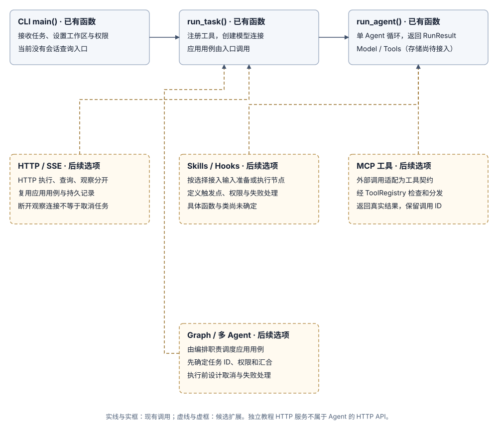

阶段 6：长任务支撑：大输出暂存与历史摘要
阶段 4 实现了基于输入预算的整块硬裁剪，阶段 5 实现了跨会话的项目知识复用。但当单次任务步骤变多、工具输出极大时，单纯的整块硬裁剪会把关键目标裁掉，单步超大回执更会瞬间撑爆上下文。本阶段聚焦长任务执行中的这两大死穴，通过大输出暂存与历史结构化摘要，让长任务能够稳定跑完。
1. 问题起点：长任务的两大真实死穴
在多步长任务或复杂分析场景中，系统往往会遭遇两类确定性的执行失败：
死穴一：工具单次吐出巨量数据（单步撑爆上下文）
- 用户：“请分析 access.log 中最近的 5 个 500 报错根因。”
- 模型：提出调用
read_file(path="access.log")。 - （系统执行工具：日志文件有 10MB、20 万行文本）
- （模型请求组装：单条 ToolResult 估算超过 80,000 Token，瞬间突破最大预算，任务直接失败报错）
死穴二：多步执行后硬裁剪导致目标遗忘（任务跑偏失忆）
- 用户：“重构 auth 鉴权模块。必须严格兼容旧版 JWT 格式，最后输出重构文件清单。”
- （模型连续执行了 16 轮文件检索、读取与单元测试）
- （触发阶段 4 的整块硬裁剪：前 8 轮交互被全量丢弃）
- 模型：“重构已完成。” （完全忘记了必须兼容旧版 JWT 格式的核心约束，也没有输出文件清单）
期望达到的效果：
- 单步输出不超限：无论单次工具返回多大体积，进入模型的载荷绝不突破上下文预算。
- 长流程不丢初衷：即使任务持续 20 步以上，最初的用户 Prompt 与全局验收标准始终受保护。
- 中间细节可追溯：预览与摘要带有明确的磁盘保存路径与偏移指针，必要时模型可定向补读。
- 压缩收益可量化：能明确衡量引入暂存与摘要后，复杂长任务的端到端完成率提升与 Token 节省比例。
2. 机制设计：大输出暂存与历史结构化摘要
针对上述两大死穴，设计两套相互独立又紧密配合的上下文保护机制：
- 大输出本地暂存与首尾预览（Offloading / Preview）：
- 触发时机：工具执行完成、向 Runner 返回结果时，检查回执体积；若超过安全阈值（例如 3,000 字符或 1KB），自动触发拦截。
- 处理动作：将完整输出原样写入工作区的磁盘暂存文件（如
.learn_agent/artifacts/tool_xxx.txt）。 - 模型载荷：发给模型的
ToolResult仅保留【前 500 字符预览】+【后 500 字符预览】，并附带完整文件路径与分页补读提示（如read_file(offset=..., limit=...)）。
- 历史交互块的结构化摘要（Compaction / Summarization）：
- 触发时机：当已完成的历史任务块累计占用超过上下文预算水位线（例如占用达总预算的 50%）时。
- 处理动作：不再将旧 Turn 整体硬删除，而是将中间连续多轮的“尝试、报错、探查”过程压缩为一条结构化的事实摘要。
- 保护边界：用户的首条原始 Prompt（包含最初约束与验收条件）和最近一轮交互属于绝对保护区，只对中间已完成的工具交互块进行折叠。
与阶段 4 预算及阶段 5 Memory 的清晰边界：
- 阶段 4 上下文预算：兜底防线。先估算完整体积，超限时执行按任务块的硬裁剪。
- 阶段 5 Memory：管理跨会话的项目规则与约定（
workspace/MEMORY.md）。 - 阶段 6 长任务机制：在阶段 4 的硬裁剪发生之前，先用“大输出暂存”压缩单步膨胀，再用“历史结构化摘要”压缩中间过程，尽量避免关键目标被裁剪丢弃。
3. 实现与对照流程
3.1 现有代码基础与扩展接入点
当前状态：尚未实现大输出暂存与结构化摘要。现有代码已具备 run_agent()、ToolRegistry、SessionLog 与 select_context()。后续长任务机制围绕两处边界接入：

3.2 选定机制后的落地步骤
- 定位长任务失败根因：查询阶段 3 保存的 JSONL 会话记录，确认失败是因为单次工具输出撑爆窗口（死穴一），还是多步执行后阶段 4 硬裁剪导致早期要求丢失（死穴二）。
- 实现大输出暂存（Offloading）：在
ToolRegistry执行回执返回处拦截大体积文本，将完整内容写入磁盘临时文件，构造带路径指针与首尾预览的ToolResult。 - 实现历史结构化摘要（Compaction）：实现摘要提取逻辑，将旧任务块的中间交互提炼为结构化关键事实，替换原始冗长消息。
- 接入上下文构建流程：在
select_context()中优先注入初始要求、结构化摘要与当前轮次，通过阶段 4 预算检查后构造ModelRequest。 - 对照基线量化评测：在固定多步测试用例上对比引入机制前后的任务完成率、Token 消耗（含生成摘要消耗）与总耗时。
3.3 存储与数据结构设计要点
长任务支撑所需的数据结构保持轻量，围绕文件与摘要元数据设计：
- 暂存文件元数据：记录关联的会话 ID、Turn ID、工具调用 ID、原始字符数与文件磁盘相对路径。
- 结构化摘要记录：记录被压缩的原始 Turn 起止范围、原始估算 Token 数、摘要正文及生成消耗的 Token。
3.4 对照原则
每次实验只引入单一机制（先验证暂存，再验证摘要）。记录生成摘要本身带来的 Token 与时间开销，确保长任务优化产生确定性的综合净收益。
4. 期望达到的效果
- 单步输出不超限：无论单次工具返回多大数据，进入模型的单条消息体积严格受控。
- 长流程不丢初衷：多步长任务始终保护初始用户 Prompt 与全局验收标准，模型执行不跑偏。
- 细节按需可追溯：预览与摘要带有明确的磁盘保存路径与偏移指针，必要时模型可定向补读。
- 压缩收益可量化：能用数据证明引入暂存与摘要后，复杂长任务通过率提升与 Token 节省比。